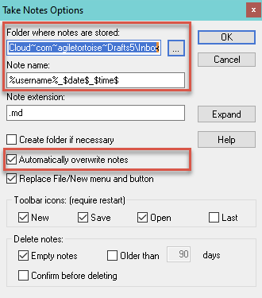

At work, I have to use a Windows machine and I find myself needing to quickly get my thoughts into a note. I tried to use notepad, notepad++, simple sticky notes and a few other text editors but they did not meet my requirements for a quick capture tool like Drafts.
Notepad and the rest of the editors do not have a global hotkey to launch and more importantly, they do not autosave i.e. I need to enter the filename and choose the folder to save these files.
The most obvious answer is to use Drafts Web Capture (getdrafts.com) but I don’t like this approach because
- I need to keep the browser tab open as opposed to a global hotkey to trigger it and
- sometimes, I get logged out and have to log in to Apple id (plus entering 2FA) and by the time I get the website up, my fleeting thoughts escaped me.
With a little tweaking, I finally manage to land on a set of tools that are fast, autosaves to iCloud, and works with Drafts. Here are the steps, in case there are users who are stuck in Windows and want to get your notes into Drafts.
There are two tools needed:
- notepad++ (free and open-sourced) and 3 Plugins for data entry
- a software to launch notepad++ when I pressed a hotkey, in this case, I already owned DisplayFusion, a handy tool if you use multiple monitors, which does have a function to launch the application. Otherwise, you can use AutoHotKey to launch app, which is free.
- Using Drafts Automatic Import feature.
Let me share my tweaking on notepad++
-
You will need 3 Plugins. To install Plugin in notepad++, click Plugin - Plugin Admin and you will be presented with a table to install Plugin:
-
The 3 PlugIns you need to install are:
a. AutoSave
b. TakeNotes
c. PythonScript -
Once you have installed it, you can go to PlugIn - AutoSave - Options to configure the plugin.
a. For AutoSave, this is the Option screen

Note a few things which I highlighted in red. Firstly, it will autosave every 1 minute or when notepad++ loses focus. Secondly, it will always overwrite the existing file and thirdly, the location of Drafts Inbox for automatic import later.
b. TakeNotes Option screen

This Plugin allows you to click File - New in notepad++ to create a new, empty file with username+timestamp instead of notepad++ default’s name which is “new 1”, “new 2”, etc.
However, you still need to click File, New (two clicks) or click on the icon (one click). This is still not ideal for me. I want notepad++ to autogenerate a new file with username+timestamp during launch. This can be achieved by PythonScript. See next step.
c. PythonScript
How do you do automate “File - New” when you launch notepad++?
If you click PlugIn - PythonScript - Configuration, the following screen appears.
You will note that if I set Initialisation to ATSTARTUP, PythonScript PlugIn will always run startup.py when notepad++ is launched.
You can locate startup.py is this directory:
C:\Program Files\Notepad++\plugins\PythonScript\scripts
I just enter one command at the end of the file:
# In order to set the stdout to the current active document, uncomment the following line
# sys.stdout = editor
# So print "hello world", will insert "hello world" at the current cursor position
# For DRAFTS IMPORT
notepad.runMenuCommand('Take Notes','Create new note')Translation: when notepad++ is launched, PythonScript will run startup.py which will also tell TakeNotes PlugIn to create a new note with username+timestamp as the file name.
Once you have your text files save into iCloud Drive\Drafts\Inbox, you can launch Drafts on the iPhone and these notes will be automatically imported into Drafts.
Hope this helps!

{kind=link}